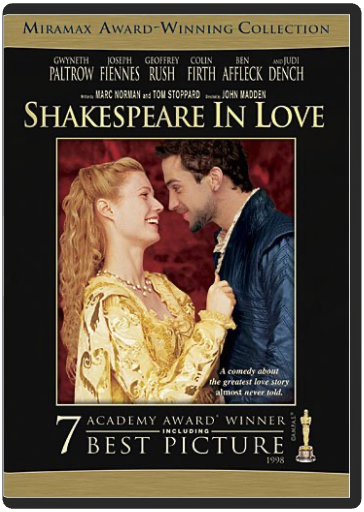
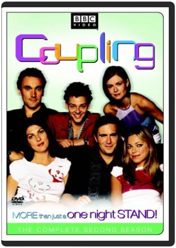
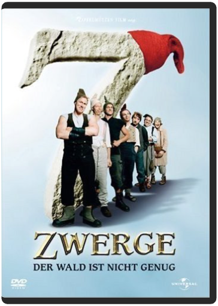

 Shakespeare in LoveJohn Madden  Triumphant winner of 7 Academy Awards(R) — including Best Picture — this witty, sexy smash features Oscar(R)-winning Best Actress Gwyneth Paltrow (SLIDING DOORS, THE ROYAL TENENBAUMS) and an amazing cast that includes Academy Award-winners Judi Dench (Best Supporting Actress), Geoffrey Rush (Best Actor — SHINE), and Ben Affleck (GOOD WILL HUNTING, PEARL HARBOR). When Will Shakespeare (Joseph Fiennes — ELIZABETH) needs passionate inspiration to break a bad case of writer's block, a secret romance with the beautiful Lady Viola (Paltrow) starts the words flowing like never before! There are just two things he'll have to learn about his new love: not only is she promised to marry someone else, but she's successfully impersonating a man in order to play the lead in Will's latest production! A truly can't-miss motion picture event with outstanding critical acclaim to match its impressive collection of major awards — everyone will love this funny behind-the-scenes look at the writing of the greatest love story ever told!  This delightfully fun and lighthearted comedy is based on the story that inspired the hit movie CLUELESS! Dazzling Gwyneth Paltrow (SHAKESPEARE IN LOVE, THE ROYAL TENENBAUMS) shines as EMMA, a mischievous young beauty who sets up her single friends. Funny thing is ... she's not very good at it! So when Emma tries to find a man for Harriet (Toni Collette — THE SIXTH SENSE, ABOUT A BOY), she makes a hilariously tangled mess of everyone's lives. You'll enjoy all the comic confusion ... until Emma herself falls in love, finally freeing everyone from her outrageously misguided attempts at matchmaking. Seven Periods with Mr Gormsby [ NON-USA FORMAT, PAL, Reg.0 Import - Australia ]Danny Mulheron Australia released, PAL/Region 0 DVD: it WILL NOT play on standard US DVD player. You need multi-region PAL/NTSC DVD player to view it in USA/Canada: LANGUAGES: English ( Dolby Digital 2.0 ), English ( Subtitles ), WIDESCREEN (1.78:1), SPECIAL FEATURES: Interactive Menu, SYNOPSIS: Seven Periods with Mr. Gormsby is an unrepentant politically incorrect, roller-coaster romp about an extraordinarily eccentric secondary-school teacher, who the Education Review Office in their last assessment described as follows: 'Mr Gormsby is an out-dated, reactionary, racist, sexist teacher completely out of touch with educational theory in the second millennium. He defies the curriculum in every subject and is a disgrace to the profession. He should have no place in any state or private school. We will close Tepapawai Boys High and appoint a commissioner if Mr Gormsby is not replaced forthwith.' ...Seven Periods with Mr Gormsby  Coupling - The Complete Second SeasonMykola Pawluk, Martin Dennis More than just a one night stand! Pick up BBC's most successful new comedy since Absolutely Fabulous, as Coupling returns with the two-disc set Coupling: The Complete Second Season. Find our who splits, who hooks up and pick up even more outrageous "Jeffisms" from this brilliant and sexy farce.  7 Dwarves - The Wood is Not EnoughSven Unterwaldt Jr. Germany released, PAL/Region 2 DVD: it WILL NOT play on standard US DVD player. You need multi-region PAL/NTSC DVD player to view it in USA/Canada: LANGUAGES: German ( Dolby Digital 5.1 ), English ( Subtitles ), German ( Subtitles ), ANAMORPHIC WIDESCREEN (2.35:1), SPECIAL FEATURES: Alternative Footage, Anamorphic Widescreen, Interactive Menu, Scene Access, SYNOPSIS: The Seven Dwarves face their biggest challenge yet: Snow White asks them to help her prevent Rumpelstiltsken from coming to get her child. On their way they face many adventures and there are many surprises in store for them. The dwarves even visit a country they have never been to before, but which looks strangely familiar to us—this time the wood simply is not enough. ...7 Dwarves - The Wood is Not Enough (2006) ( 7 Zwerge - Der Wald ist nicht genug ) ( Seven Dwarves - The Forest Is Not Enough )  Robin Williams turns in a dynamic, Oscar-nominated performance as a literature teacher whose unorthodox methods inspire his students and upset the administration at a boy's boarding school. Ethan Hawke, Robert Sean Leonard, Norman Lloyd also star. Peter Weir directs; filmed in Delaware. 128 min. Widescreen; Soundtracks: English Dolby Digital Surround, French Dolby Digital stereo. Memoirs of a Geisha Movies DVDKen Watanabe,Michelle Yeoh,Gong Li Ziyi Zhang, Dion Beebe hong kong movies DVD |  Together, Sean Connery, Richard Gere, Julia Ormond (Legends of the Fall, Sabrina) and Jerry Zucker,the director of Ghost, bring you a new vision of King Arthur's Camelot. A vision of breathtaking battles, of heart-pounding courage, of the undeniable love that brought an entire kingdom to its knees... and of the undying passion that made it live forever. |

Doddridge Library
Collection Total:
417 Items
417 Items
Last Updated:
Apr 21, 2020
Apr 21, 2020
 Made with Delicious Library
Made with Delicious Library